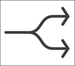
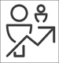

Pathways in Meddbase provide a rich range of capabilities. They enable the setup of workflows made up of a series of steps where actions are carried out. What may not be clear, is the capabilities available within Pathways and to whom they are available. This article can help.
This article gives you an overview of:
Pathways can be used by:
When they have been specified and configured, a wide range of workflows can be completed through Pathways. These use Pathway tasks.
The sub-sections below outline the different tasks that you can complete using Pathways.
| A Pathway task can send a questionnaire to a patient to complete. When sent, the patient receives an email with a 2-factor authentication link. |
From within a Pathway, a task can be used to launch the Slot Finder. This includes the automatic definition of the appointment type. |
 | This works with the Book an appointment task noted above. It is based on whether an appointment is arrived, cancelled or DNA’d (Did Not Arrive). This can also decide on the next task in the Pathway. |
A Pathway task can ask the user to upload a document to the patient’s record in Meddbase. If a template is provided, it will automatically create and attach the document. |
A Pathway task can work with the Attach a document task above. When used it creates a side by side view of the attached document and a clinical form. |
A Pathway task can ask the Meddbase user to call the patient. This same Pathway task can also be configured to automatically send the patient an SMS or e-mail using a template. |
SMS messages sent from a Pathway can prompt the patient to respond. The response can determine the next step in the pathway workflow giving the patient more control over their care journey. |
A Pathway can create a general task that can have a customised description. This is a flexible method of generating a task not covered by other areas. |
A Pathway task can create a form that asks the Meddbase user to complete field values. This form is similar to a Clinical form. |
 | A Pathway task can work in a similar way to the Referral feature available from a patient record. However, the creation of a referral is integrated into the Pathway itself. |
A Pathway task can use the reporting system to find a list of patients that meet any criteria set in filters. Typically it is used together with other features described below to find a set of patients and then delete them. Alternatively, this could be used to bulk start Pathways for a set of patients. |
A Pathway task can use a patient query described above to allow the user to review a list of patients and delete them from a chamber. |
A Pathway task can undo the wiping of patient records if a mistake was made. |
A Pathway task can allow the user to select services to add to an appointment. This would typically be used before a "book an appointment" task. |
An automatic task to display a message to users at the end of a Pathway to know that it is completed. |
A message that can be presented to a user when something fails in a Pathway. |
Using the functions and features outlined below, Pathways can be used to manage Service level agreements. |
The list above shows examples of what jobs can be completed through Pathways. The table below outlines some of the features and functions available within Pathways that enable users to complete the jobs they need to do.
This can be helpful to understand the toolkit available for Pathway design.
This can work with other tasks in a Pathway to create recurring tasks under certain conditions. As an example, this could be used with the Contact account task to send a patient an e-mail every day at noon for 1 week. |
The ‘Condition’ feature is a component of a Pathway that evaluates a value. For example, where a value is ‘0’ (‘false’) it could load a ‘Book an appointment’ task. But where a value is ‘1’ (‘true’) it could alternatively ‘Send a questionnaire’. |
The ‘Switch’ feature is a component of a Pathway that is like a ‘Condition’ but can work with a list of conditions. Where it finds a condition that is true, it can then perform the action assigned to that condition. |
The ‘Make a decision’ feature asks the user to make a decision using up to 5 options. The Pathway then is routed in a specific direction based on the user's decision. |
There are two flavours of this feature. In the ‘When all’ flavour is used, a series of tasks can be added to a container (i.e. a group). The tasks within the container can be completed in any order. But to move through to the next stage of the Pathway, all tasks within a container need to be completed. |
In this flavour of the parallel tasks feature of a Pathway, multiple tasks can be added to a container as above. But when the user completes any one of the tasks, the other tasks will be automatically skipped so that the user moves on to the next step in the Pathway. |
For each task, the Pathway designer can define whether a user can skip a task, edit a task or delete a task. |
For each task, the Pathway designer can define whether the task is shared with the patient in the Patient Portal. |
In the Occupational Health context, for a task, the Pathway designer can define whether a task is shared with an authorised employee manager on the OH Portal. |
For each Pathway task, there can be a time set for when a task should start, when it is overdue or when it will automatically be skipped. These timings can be calculated from other tasks in the Pathway. |
Tasks in a Pathway can be assigned to role groups of users for action. |
It’s a good idea to get in contact with us to help understand your requirements to see how we can help you build the Pathway you need.
You can either Submit a request to the Support team or contact our customer account management team.